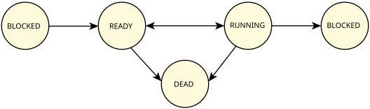

The number of threads within a process can vary widely, with threads
being created and destroyed dynamically.
Thread creation
(pthread_create()) involves allocating and initializing the
necessary resources within the process's address space (e.g., thread stack)
and starting the execution of the thread at some function in the address space.
There are limits on how many threads you can create for a process;
for details, see Other system limits
in the QNX OS User's Guide.
Thread termination
(pthread_exit(),
pthread_cancel()) involves stopping the thread
and reclaiming the thread's resources.
As a thread executes, its state can generally be described as either
blocked
,
ready
,
or
running
:
Figure 1. Possible thread states and state transitions.

The term blocked
covers the many different states in which a thread can't make progress
(and hence, currently can't be executed). Most often, this is because it has issued a kernel call
that has blocked, but it also occurs if another thread has signaled that the thread must be stopped.
In this release, threads can block only themselves and not other threads, so a thread must run
before going into a blocked state, including the STOPPED state.
The exact state that a blocked thread is in depends on the reason that the thread blocked,
such as the thread must wait for a message reply or for a semaphore to be posted.
When a thread terminates itself or gets terminated, encounters a fatal error, or receives a signal
to shut down that it can't block or ignore (e.g., SIGKILL), it's then moved by the
kernel to the DEAD state.
The thread will never run again and the OS will reclaim its resources when convenient.
The exact possible thread states are:
- STATE_BARRIER
- The thread is blocked on a barrier (e.g., it called
pthread_barrier_wait()).
- STATE_CONDVAR
- The thread is blocked on a condition variable (e.g., it called
pthread_cond_wait()).
- STATE_DEAD
- The thread has terminated and is waiting for a join by another thread.
- STATE_INTR
- The thread is blocked waiting for an interrupt (i.e., it called
InterruptWait()).
- STATE_JOIN
- The thread is blocked waiting to join another thread
(e.g., it called
pthread_join()).
- STATE_MQ_RECEIVE
- The thread is waiting on an empty queue after calling
mq_receive().
- STATE_MQ_SEND
- The thread is waiting on a full queue after calling
mq_send().
- STATE_MUON_MUTEX
- The thread is blocked on an internal kernel mutex.
- STATE_MUTEX
- The thread is blocked on a mutual exclusion lock (e.g., it called
pthread_mutex_lock()).
- STATE_NANOSLEEP
- The thread is sleeping for a time interval (e.g., it called
nanosleep()).
- STATE_READY
- The thread is waiting to be executed while other threads are running.
- STATE_RECEIVE
- The thread is blocked on a message receive (e.g., it called
MsgReceive()).
- STATE_REPLY
- The thread is blocked on a message reply (i.e., it called
MsgSend(),
and the server received the message).
- STATE_RUNNING
- The thread is being executed by a processor.
- STATE_RWLOCK_READ
- The thread is blocked trying to acquire a non-exclusive lock of a reader/writer lock
after calling pthread_rwlock_rdlock().
- STATE_RWLOCK_WRITE
- The thread is blocked trying to acquire an exclusive lock of a reader/writer lock
after calling pthread_rwlock_wrlock().
- STATE_SEM
- The thread is waiting for a semaphore to be posted (i.e., it called
sem_wait()).
- STATE_SEND
- The thread is blocked on a message send (e.g., it called
MsgSend(),
but the server hasn't yet received the message).
- STATE_SIGSUSPEND
- The thread is blocked waiting for a signal (i.e., it called
sigsuspend()).
- STATE_SIGWAITINFO
- The thread is blocked waiting for a signal (i.e., it called
sigwaitinfo()).
- STATE_STOPPED
- The thread has stopped, for example because it received a SIGSTOP or
ThreadCtl() command.
- STATE_WAITPAGE
- The thread is waiting for physical memory to be
allocated for a virtual address.
Note:
In discussion and in the documentation, we usually omit the STATE_
prefix.